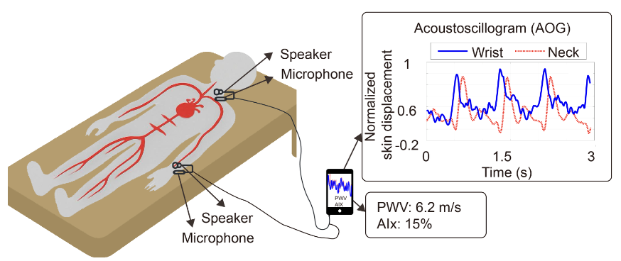
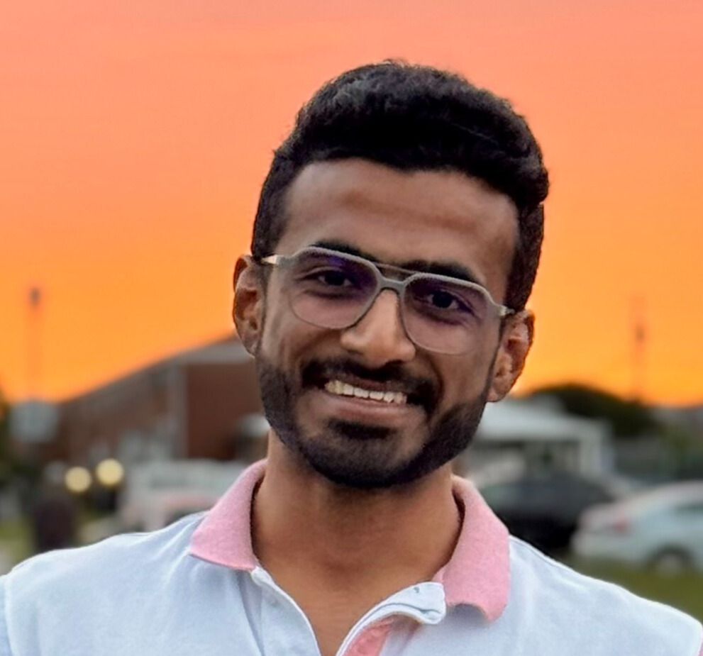
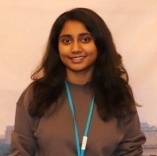
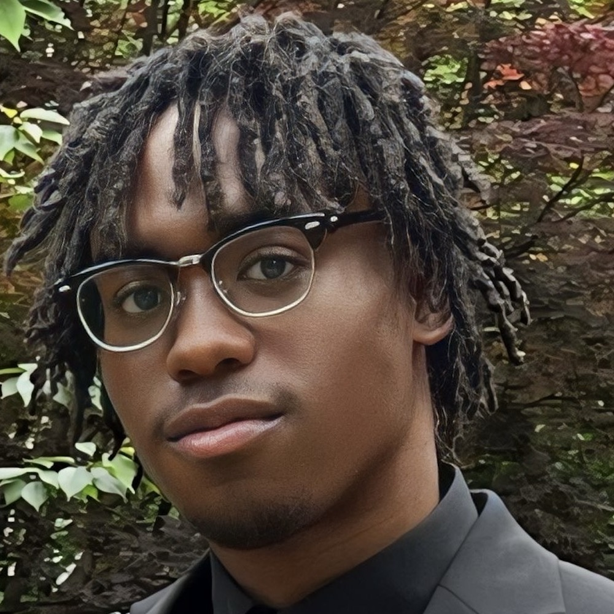
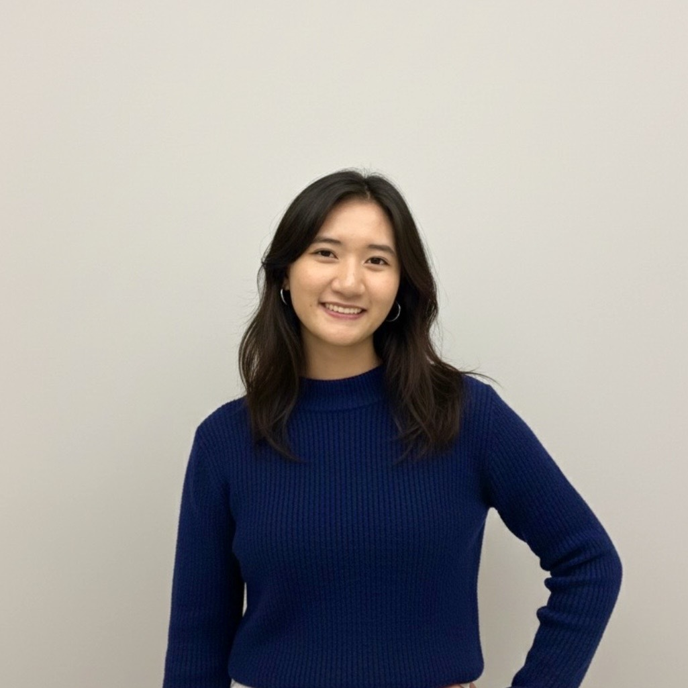
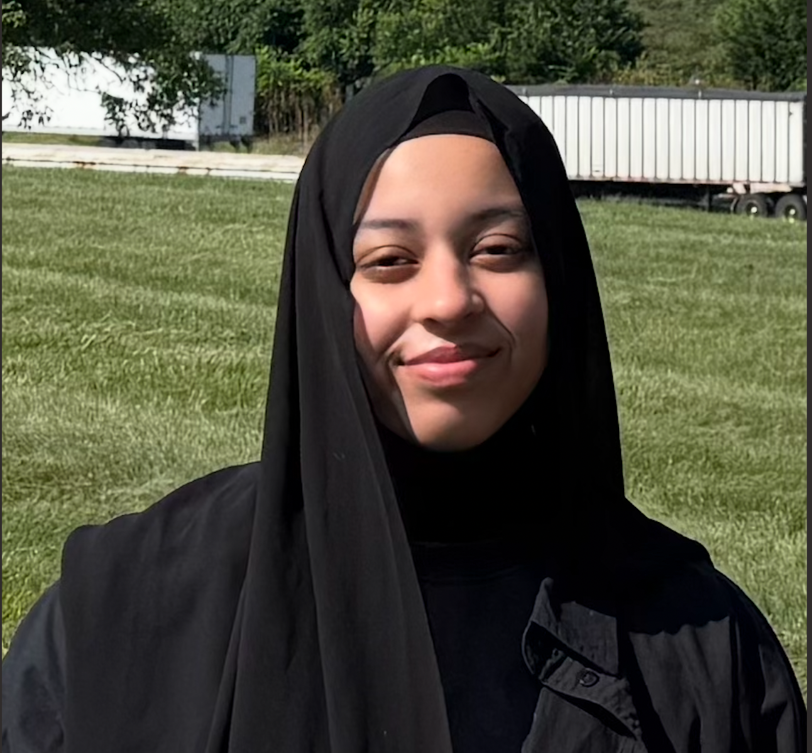
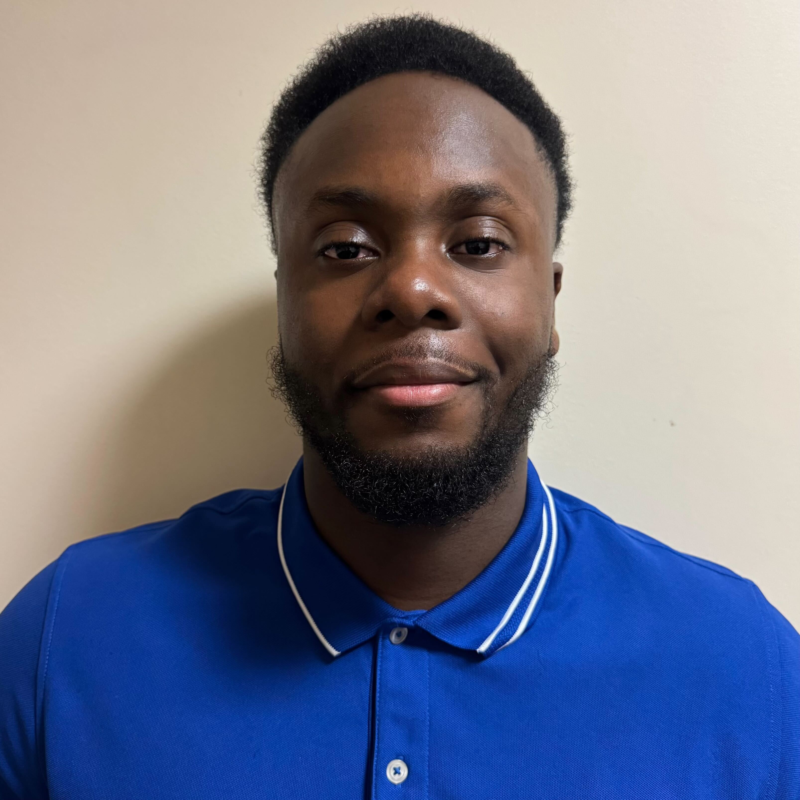
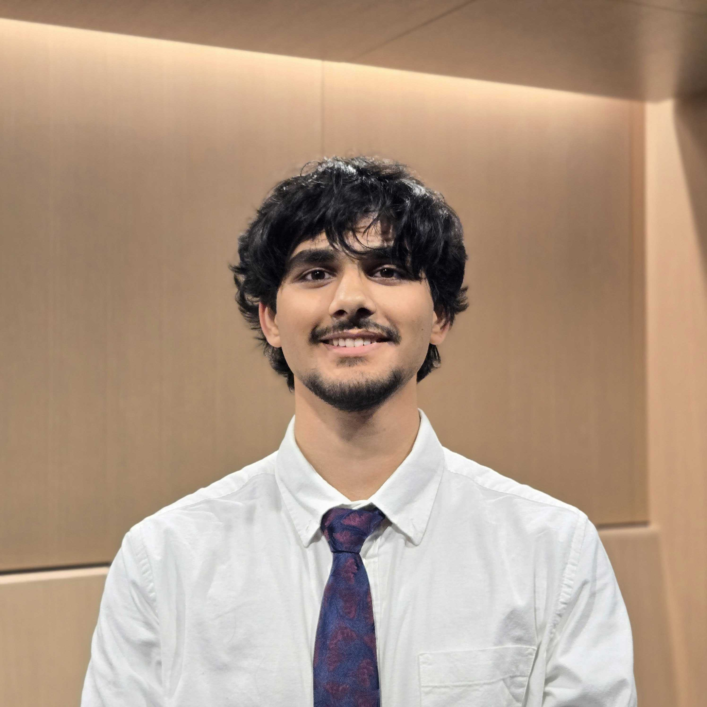
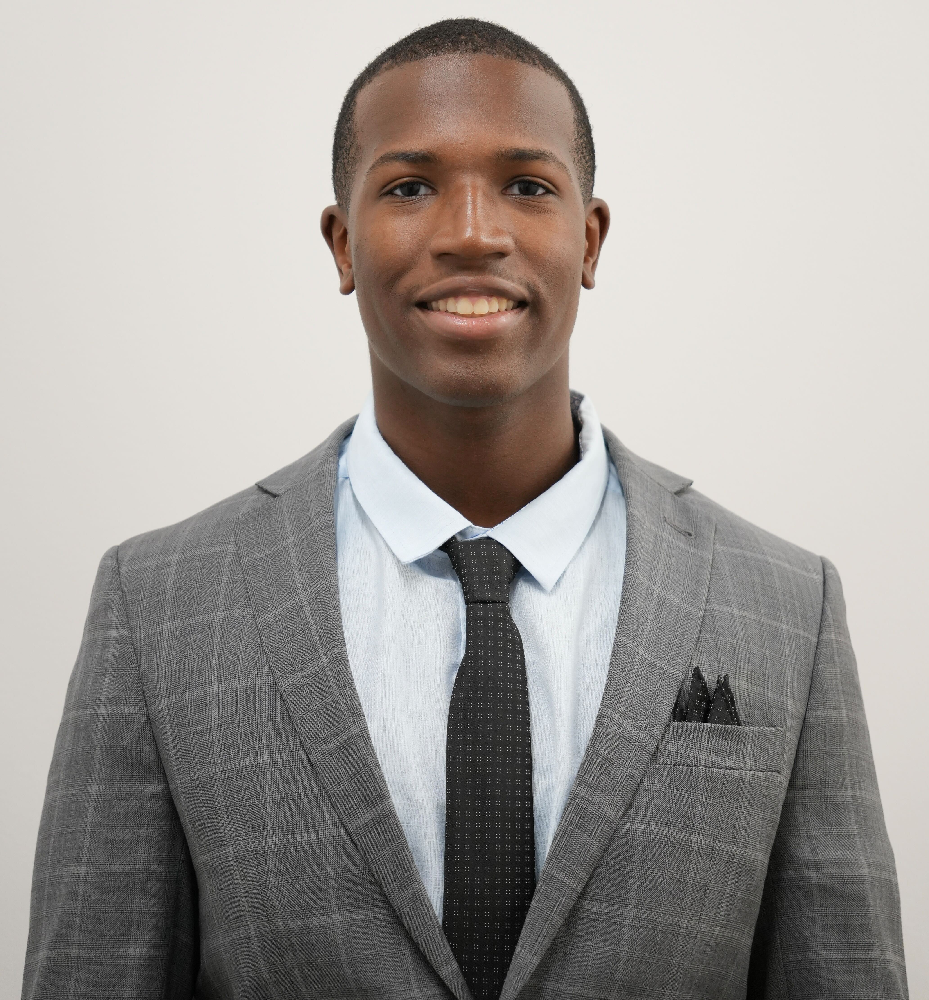

IMWUT / UbiComp · 2026
Acoustoscillogram
Arterial health sensing with low-cost wired earphones.
Explore project →My research develops intelligent sensing systems that transform everyday devices into powerful tools for health, interaction, and trustworthy computing.
🫀 Mobile and Wearable Health: Developing accessible sensing technologies that turn smartphones, earphones, and wearables into tools for physiological and health monitoring.
📡 Ubiquitous Sensing: Unlocking new sensing capabilities in everyday devices by combining acoustic, inertial, wireless, and other sensing modalities.
🛡️ Intelligent and Trustworthy Sensing: Building intelligent sensing systems that are secure, robust, and trustworthy in real-world human and AI interactions.
Research support. My research has been supported by the Google Research Scholar Award, Cyber Graduate Fellowship, UMB ICTR ATIP Grant, UMBC START Award, UMBC-UMB ICTR CONNECT Funding, UMBC CIP Award, and a portfolio of student research awards.
Translational impact. I work to translate sensing research from laboratory prototypes to real-world healthcare solutions through clinical collaborations, invention disclosures, and entrepreneurship. My commercialization efforts have been supported by UMBC CENTRE Funding and FEAT Award, and our PocketCardio team won 1st Place at the 2026 Maryland NEW VENTURE™ Program Pitch Night.
Recognition. My work has received a MobiSys Featured Paper, IEEE S&P SecureTrans Best Demo Award, and MobiQuitous Best Paper Runner-Up. My students have received the Computing for Social Good Award, Best of COEIT Graduate Award, CSEE Research Day Best Poster Award, Doctorate Student Award, and multiple Undergraduate Student Awards.
Selected work in accessible acoustic sensing, mobile health, and human-device interaction.
1 / 5
Updates from research, students, and the academic community.

CSEE, UMBC
Incoming Ph.D. student, Fall 2026

Data Science, UMBC
CSEE, UMBC

CSEE, UMBC

CSEE, UMBC

CSEE, UMBC

CSEE, UMBC

CSEE, UMBC

CSEE, UMBC
Shirui Cao (UMass Amherst), Xiaoxuan Liang (UMass Amherst), and Renzhi Hao (Independent Researcher).
Mu Du, Ayodeji Adesina, and Kaleem Butt.
IMWUT / UbiComp · 2026
CMSC 491/691: Special Topics in Computer Science
Course materials
Technical program committee member and reviewer for leading venues in mobile, ubiquitous, sensing, and networking systems, including MobiSys, SenSys, EWSN, PerCom, and IMWUT.